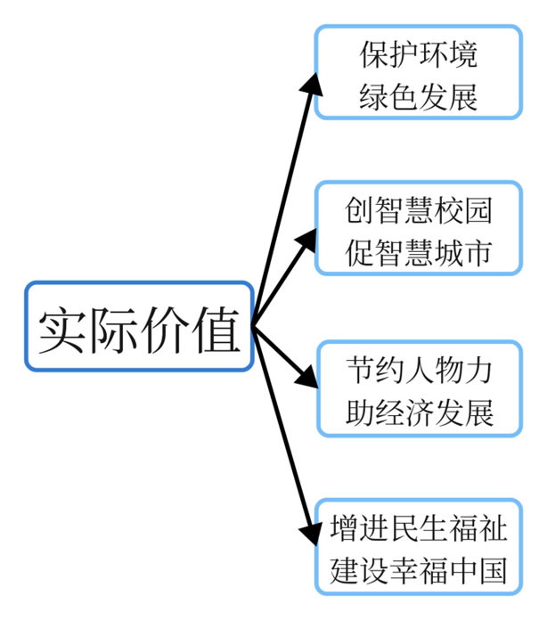

About
如今，计算机技术在环境检测、评估、治理等环节中发挥巨大作用。未来，计算机技术必然推动节约资源、保护环境的基本国策一步步落实。
为了清扫道路垃圾、进行垃圾分类，当代校园往往需投入大量的人力物力。而道路上往往有无意散落的失物随同垃圾一卷而走。对此，以智能识别为基础的环境评测、清洁一体化系统可以经济环保、精准高效地解决校园垃圾问题。
发展该系统为建立智慧校园提供了一种新的可能性，即：将智能识别融入校园垃圾的清洁工作，拓展了人工智能的运用空间。
同时弥补智慧校园在与社会生活联动上的缺陷。
The Eye of Green

由此，我们萌生了“以智能识别为基础的校园环境评测、清洁一体化系统”的创意，通过图像的智能识别减少人力在校园清洁上的投入，同时进行高效的垃圾回收清理。并且，结合机器人的发展趋势，我们可以采用机器人来取代以化石燃料为动力的垃圾车，为低碳环保出力。在智能化发展愈演愈烈的今天，人工智能可为绿色校园的实现提供先进高效的技术支撑与推动，二者的相结合更有助于促进智慧校园的建立与发展。